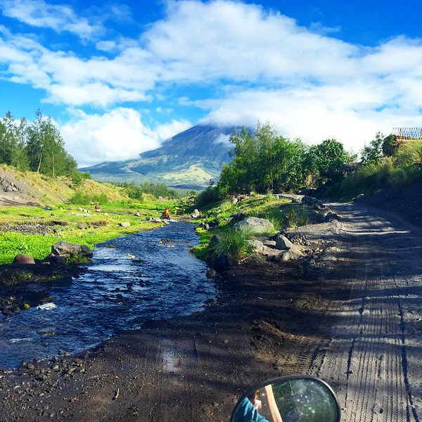
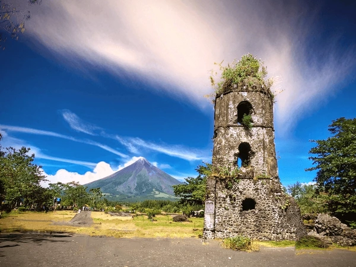

Heart of Bicol. Soul of Adventure. Home of the Perfect Cone.
Albay is a province located in the Bicol Region (Region V) of the Philippines. It lies in the southeastern tip of Luzon, bordered by Camarines Sur to the north, Sorsogon to the south, and the Pacific Ocean to the east. The provincial capital is Legazpi City, the only highly urbanized city in the region.
The province covers approximately 2,575 square kilometers and is composed of 15 municipalities and 3 cities: Legazpi, Ligao, and Tabaco. Albay is part of the Partido District and is known as one of the most disaster-resilient provinces in the Philippines due to its long history of living with an active volcano.

The history of Albay stretches back to pre-colonial times when Bicolano peoples inhabited the land. The name "Albay" is believed to have originated from a Bicolano term, though its exact etymology is debated. Spanish colonizers established the province formally in the 17th century, and the Catholic faith became deeply woven into the local identity through the construction of churches that still stand today.
Mayon Volcano's eruptions have shaped not just the physical landscape but also the history and resilience of its people. The 1814 eruption destroyed the town of Cagsawa, killing around 1,200 people. This event is preserved in the Cagsawa Ruins, one of the most visited historical sites in the Philippines.
During the Spanish colonial period, Albay was part of the larger province of Camarines before gaining its separate provincial status. The American colonial era brought infrastructure development, and today Albay has grown into a dynamic province that balances its historical heritage with modern development.
The world's most perfect volcanic cone, dominating the skyline of Albay.
Iconic 18th-century church ruins buried by Mayon's 1814 eruption.
A premier beach destination known for crystal-clear waters and scenery.
Rolling green volcanic hills often compared to Bohol's Chocolate Hills.

The people of Albay are called Bicolanos and they speak the Bikol language. Known for their warmth, humor, and resilience, Bicolanos have a deep connection to their volcanic homeland. Catholicism is a central part of community life, with many towns celebrating their patron saint's feast day with great festivity.
The most famous cultural celebration is the Ibalong Festival, an annual street-dancing event held in Legazpi City that celebrates the epic poem "Ibalong" — the Bicolano version of a creation myth featuring mythological heroes like Baltog, Handyong, and Bantong.
Traditional crafts include abaca weaving, buri handicrafts, and pottery. Local cuisine is famous for its bold, spicy flavors — particularly the use of chili peppers and coconut milk in dishes like Bicol Express, Laing, and Pinangat.
Experience the world-famous perfectly-shaped volcano up close through ATV rides, treks, and multiple panoramic viewpoints.
Walk through centuries of history at Cagsawa Ruins and Daraga Church, remnants of Albay's Spanish colonial past.
From beaches and caves to lakes and rolling hills, Albay packs incredible natural variety into a single province.
Taste unforgettable dishes like Bicol Express and Laing — some of the Philippines' most flavorful regional foods.
Join the colorful Ibalong Festival or the Magayon Festival and experience Bicolano culture at its most festive.
Bicolanos are known for their friendly, welcoming nature. You will feel at home from the moment you arrive.